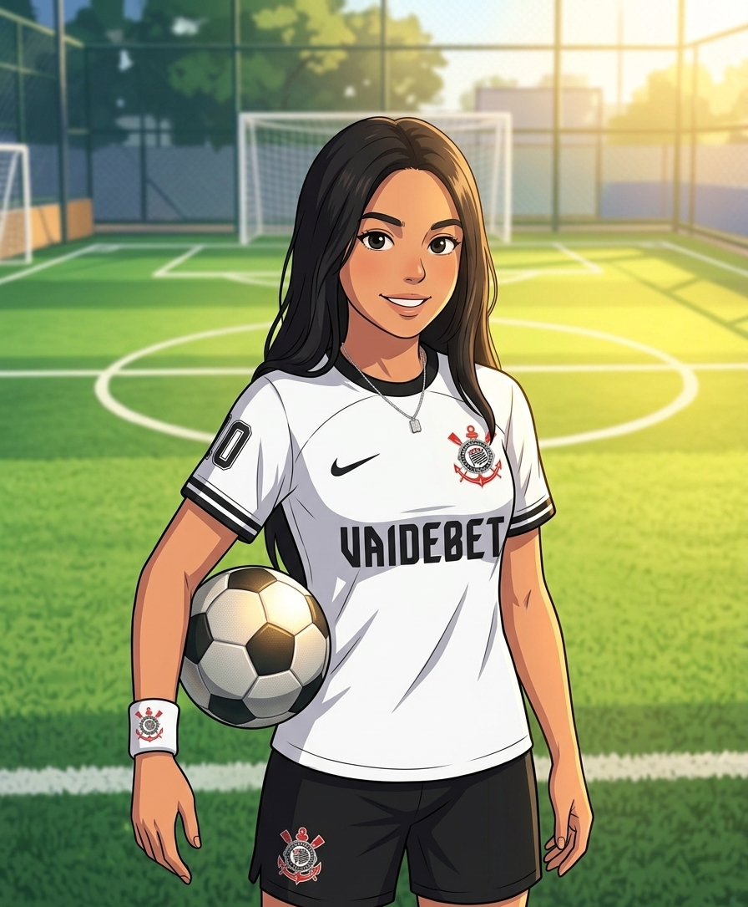

O futebol sempre foi muito mais do que um esporte para mim.
Ele me ensinou disciplina, coragem, trabalho em equipe e
principalmente a nunca desistir dos meus sonhos.
Como tudo começou

Desde a infância, o futebol faz parte da minha trajetória. Minha paixão pelo esporte
nasceu ao acompanhar os jogos do Corinthians ao lado do meu irmão, compartilhando momentos
de alegria e emoção a cada partida.
Com o passar do tempo, comecei a praticar futebol regularmente na escola, jogando com
colegas e participando de diversas atividades esportivas. Um dos momentos mais marcantes
dessa jornada aconteceu durante o campeonato interclasses, quando formamos uma equipe
para representar nossa turma. Após enfrentar diferentes adversários ao longo da competição,
chegamos à grande final contra o time dos professores.
A partida foi extremamente disputada e decidida em um único gol. Com muita determinação,
trabalho em equipe e dedicação, conseguimos superar o desafio. Tive a felicidade de marcar
o gol da vitória, garantindo o título para nossa equipe. A comemoração e o reconhecimento
dos meus colegas tornaram aquele momento inesquecível.
Foi nessa experiência que percebi o quanto o futebol representa para mim. Mais do que um
esporte, ele se tornou uma fonte de inspiração, aprendizado e superação, fortalecendo
valores que levo para a vida até hoje.